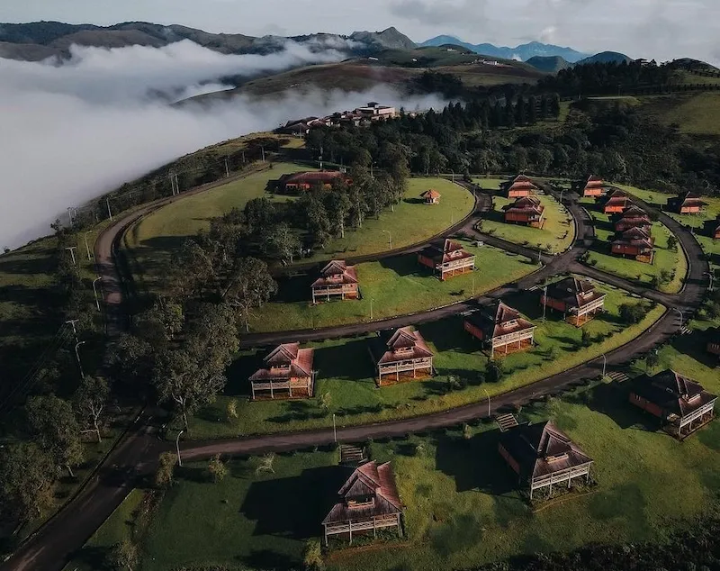

Obudu Mountain Resort
Nigeria

Scenic hills and landscapes of Obudu Mountain Resort.
About Obudu
- Country: Nigeria
- State: Cross River
- Established: 1951
- Altitude: ~1,600 meters above sea level
- Known for: Cattle Ranch, Cable cars, cool weather, and rolling green hills.
Weather
- Temperature: 16°C
- Conditions: Cool & Breezy
- Humidity: 75%
- Wind: 10 km/h
- Wind Chill: N/A